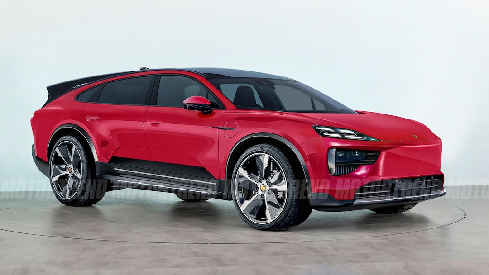
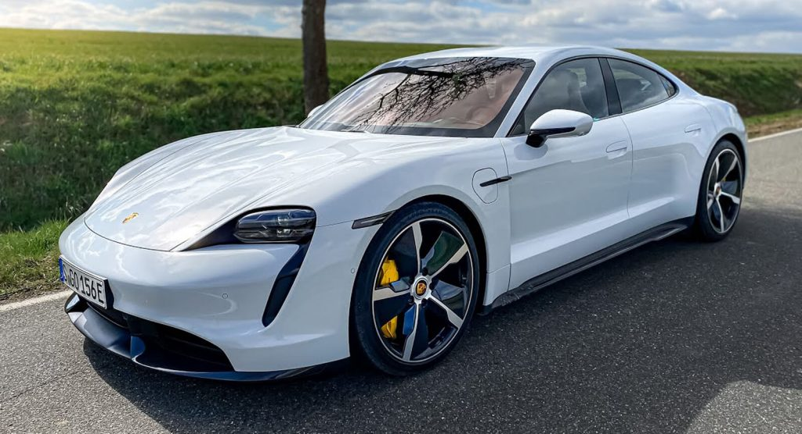

About Porsche
History
Porsche is a German automobile manufacturer specializing in high-performance sports cars, SUVs, and sedans. Founded by Ferdinand Porsche in 1931, the company is headquartered in Stuttgart, Germany. Porsche is renowned for its engineering excellence and iconic designs. The brand's most famous model, the Porsche 911, has been in continuous production since 1964. Porsche has a rich motorsport heritage, with numerous victories in endurance racing. The company's cars are known for their precision, performance, and driving pleasure. Porsche's logo, featuring a horse and antlers, is a symbol of quality and prestige. The brand has expanded its lineup to include SUVs like the Cayenne and Macan. Porsche continues to innovate with electric models like the Taycan. The company's commitment to performance and innovation is unwavering. Porsche remains a leader in the luxury sports car market.
Models
Porsche offers a diverse range of models that cater to different driving experiences. The Porsche 911 is a legendary sports car known for its performance and handling. The Porsche Cayenne is a luxury SUV that combines practicality with sportiness. The Porsche Panamera is a high-performance sedan that offers comfort and speed. The Porsche Taycan is an all-electric sports car that represents the future of the brand. Each model is designed with precision and features advanced technology. Porsche's lineup also includes limited edition models that are highly coveted by enthusiasts. The brand's commitment to innovation is evident in every car it produces. Porsche continues to push the boundaries of automotive engineering. The company's cars are celebrated for their performance, design, and exclusivity. Porsche remains a leader in the world of luxury sports cars.
- Porsche Official Website
- Porsche Models
- Porsche History
- Porsche News

Visit Porsche Learn More About Porsche